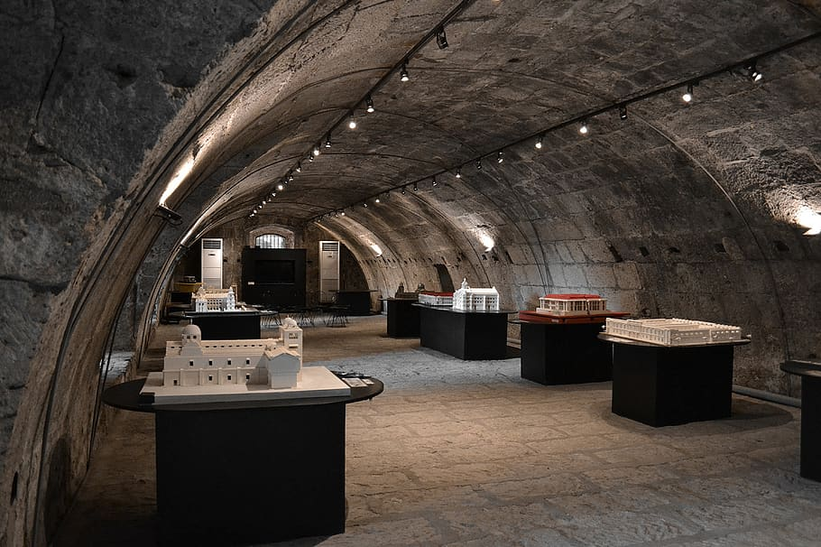
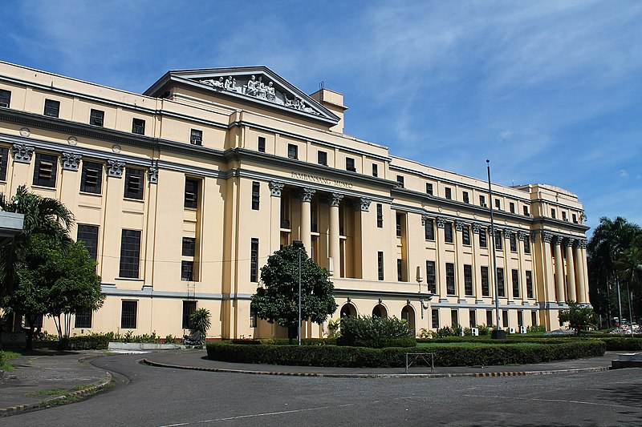

Rizal Park
Also known as Luneta Park or simply Luneta,
is a historic urban park located in Ermita, Manila,
1 / 4

2 / 4

Intramuros
The name, from the Spanish word meaning “within walls,” refers to the fortified city founded at the mouth of the Pasig River shortly after 1571 by the Spanish conquistador Miguel López de Legazpi.
The name, from the Spanish word meaning “within walls,” refers to the fortified city founded at the mouth of the Pasig River shortly after 1571 by the Spanish conquistador Miguel López de Legazpi.
3 / 4

San Augustin Church
Completed in 1607, it is the oldest stone church in the country.
Completed in 1607, it is the oldest stone church in the country.
4 / 4

National Museum
Preserves, exhibits, and fosters scholarly study and public appreciation of works of art,
Preserves, exhibits, and fosters scholarly study and public appreciation of works of art,